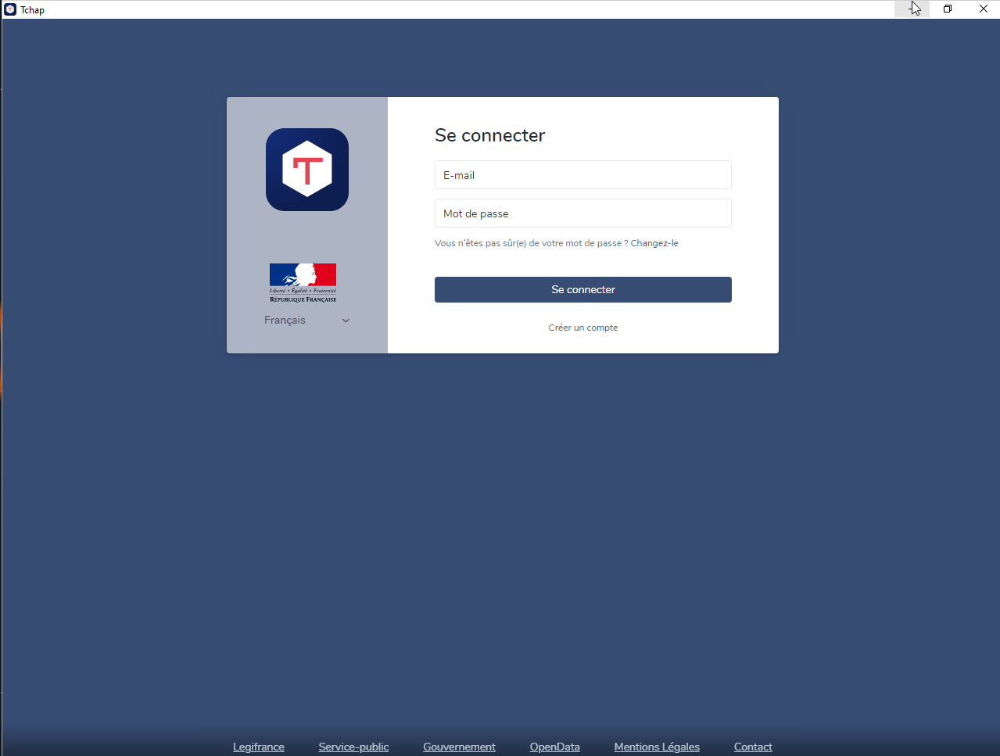

Petit retex
Nous tentons d’abandonner la messagerie “sécurisée Russe , et hébergée aux Emirats ou je ne sais oû " au profit de Tchap .
Tchap de base est en mode web . Pour y avoir accès, un membre de l’organisation y est invité , et il est de fait admin de l’application pour l’organisation , et a son tour invite les autres membres.
Par geekerie , j’ai voulu compiler l’application desktop , mais aussi par soucis d’ergonomie , je pourrais très bien détacher l’onglet tchap pour avoir une fenêtre à part , mais je préfère avoir une appli épinglé dans ma barre de tache.
Le readme de tchap-desktop
Je trouve juste qu’il manque un peu de clarté. Et J’ajoute , que la méthode fonctionne sous windows 11 également .
Les prérequis
Nous sommes sous windows , et on va installer une série d’applications en passant tour à tour du navigateur, au powershell puis l’invit de commande ….
Il est vrai que les liens du prérequis mènent aux sites web de Nodejs et de Yarn : mais c’est pas claire.
Présenté de la manière suivante , eut été plus clair .
Récupérer les packages et executer en mode administrateur
La gestion des packages avec npm ne fonctionnera pas , vous devez obligatoirement installer le package yarn .
Ajout de nativefier
En CMD, entrer cette commande: yarn global add nativefier
Dont voici le résultat.
C:\Users\ordinatous>yarn global add nativefier
yarn global v1.22.18
[1/4] Resolving packages...
[2/4] Fetching packages...
[3/4] Linking dependencies...
[4/4] Building fresh packages...
success Installed "nativefier@46.2.0" with binaries:
- nativefier
Done in 28.35s.
Ajout de GIT
Etant sous Linux depuis plus de 10 ans , mon réflexe avec github c’est un bon : git clone , mais voilà, je suis sous windows et je vais encore tomber sur un truc qui m’exaspère chez crosoft.
On doit passer d’un outil à un autre pour utiliser git .
Lien d’installation de git 4 windows
Je vois alors , qu’il existe un outil nommé winget qui permet d’installer des applications en CLI: winget étant un module de powershell .
Je me suis dit : Cool , enfin une gestion centralisée des applications et des dépendances : Non , il ne faut pas rêver .
Non, non : c’est l’équivalent de wget sous linux , rien de plus .
Pour installer winget: retour vers le web, ou le microsoft store …..
Ca ce fait en 2 temps:
- obtenir
- installer
Ensuite on passe en powershell .. et on entre cette commande:
winget install --id Git.Git -e --source winget

Le plus drôle , c’est que git ne sera pas disponnible en powershell mais en CMD ..

Vous comprenez ce qui m’exaspère maintenant ? Bref .
Un fois le dépôt cloné, le dev nous indique de se déplacer dans le répertoire assets du projet : OK .
Et indique également 2 liens pour récupérer les icones , pourtant bien présentes dans le répertoire ,et les liens sont invalides.
Et c’est là que 2 erreurs se cumulent dans la ligne de commande .
- 1 Si on est dans le répertoire assets , il ne faut pas indiquer
./assets/bla bla bla.icomais directementbla bla bla.ico - 2 il y a une erreur dans le nom de fichier.
J’ai pas les captures d’écran , j’en ai pas fait aujurd’hui pour ça, et celle que j’ai sont au boulot.
La bonne commande est celle-ci:
nativefier --name "Tchap" --platform "windows" --arch "x64" --app-copyright "DINUM/MinArm" --conceal --icon "tchap.ico" --insecure --internal-urls ".*?tchap\.gouv\.fr.*?" --maximize --enable-context-menu --enable-dev-tools --single-instance --tray "https://www.tchap.gouv.fr/"
En graphique ?

Et en CLI
nativefier --name "Tchap" --platform "windows" --arch "x64" --app-copyright "DINUM/MinArm" --conceal --icon "tchap.ico" --insecure --internal-urls ".*?tchap\.gouv\.fr.*?" --maximize --enable-context-menu --enable-dev-tools --single-instance --tray "https://www.tchap.gouv.fr/"
Hi! Nativefier is minimally maintained these days, and needs more hands.
If you have the time & motivation, help with bugfixes and maintenance is VERY welcome.
Please go to https://github.com/nativefier/nativefier and help how you can. Thanks.
Processing options...
Preparing Electron app...
Converting icons...
Packaging... This will take a few seconds, maybe minutes if the requested Electron isn't cached yet...
Downloading electron-v16.1.0-win32-x64.zip: [====================================================================] 100% ETA: 0.0 seconds
Packaging app for platform win32 x64 using electron v16.1.0
Finalizing build...
App built to C:\Users\ordinatous\tchap-desktop-experimentation\assets\Tchap-win32-x64, move to wherever it makes sense for you and run the contained .exe file.
Un truc qui m’a fait marrer : M$ n’est pas foutu de mettre un répertoire par ordre alphabétique, j’ai voulu ajouter aux accés rapide :

Bref Tchap se lance bien:


Honnêtement , je ne sais pas si je fait pareil sous debian 11 , j’ai pourtant tous les prérequis , j’ai un peu la flem’ .
(Ce travail est sous licence Attribution-NonCommercial 4.0
International .